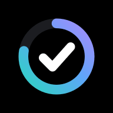

Today
Your progress ring, Top 3 focus, a focus timer, today's schedule from Google Calendar, tasks and habit check-ins — with streaks and XP to keep you coming back.

FlowOne calm place for your day, your exam prep, your month-end close and the habits that hold it all together — synced with Google Calendar on your phone, tablet and PC.
Open FlowHow it worksYour progress ring, Top 3 focus, a focus timer, today's schedule from Google Calendar, tasks and habit check-ins — with streaks and XP to keep you coming back.
A week strip, day agenda and inbox. Type “IC recon tmr 3pm #work !high” and Flow fills in the date, time, area and priority.
Exam countdowns, study hours against your target, hours per week still needed, and topic confidence for every ACCA paper.
A month-end checklist with working-day deadlines (WD1, WD2…), public holidays skipped, on-time history, and dates pushed to Google Calendar.
Daily or weekly targets, one-tap check-ins, streaks, best runs and a 12-week heatmap.
noindex, so search engines only see this public page.In your own Google Sheet, on your devices, and in daily backups in your own Google Drive. Flow has no server of its own.
Yes. Changes are saved on the device immediately and sync when you're back online.
Each checklist item has a working-day deadline (WD1, WD2 and so on) after month-end. Weekends and the public holidays you add are skipped.
Yes. On iPhone open it in Safari → Share → Add to Home Screen. On Android use Chrome → ⋮ → Add to Home screen.